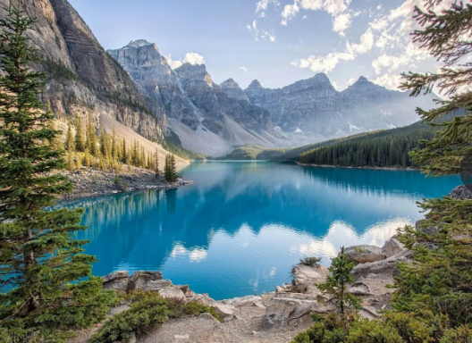
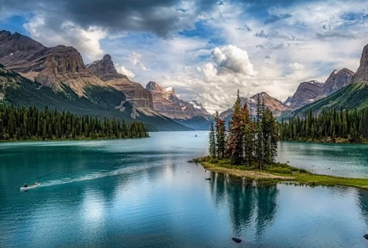
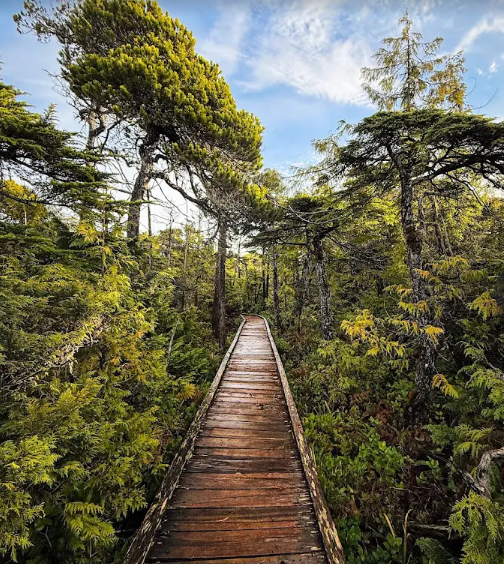
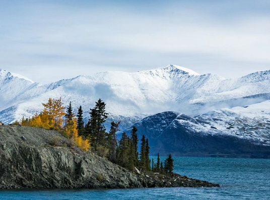
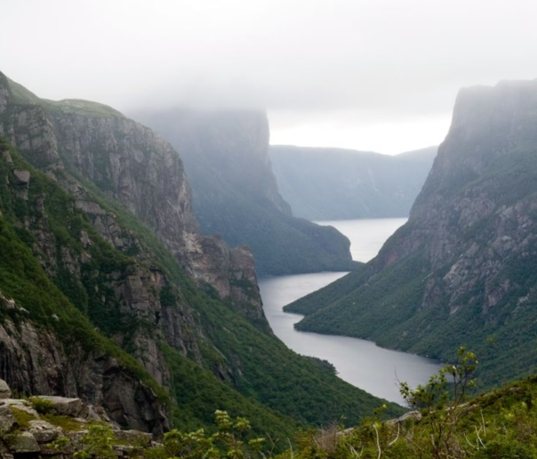
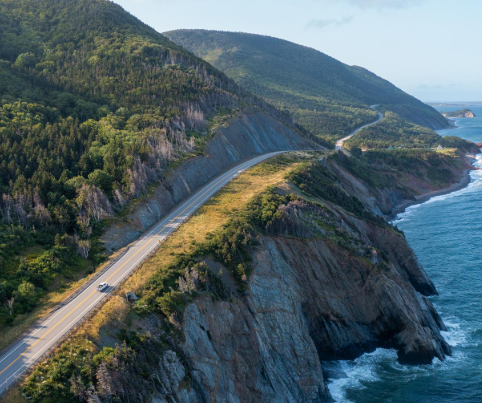

It was established in 1885 as Canada's first national park One of the main reasons tourists visit Banff is its incredible glacial lakes. Lake Louise is famous for its bright blue-green water surrounded by towering mountains, while Moraine Lake is another spectacular spot for hiking, sightseeing, and photography. Both are among the park's most visited destinations.

Jasper is another huge Rocky Mountain destination, but it has a more rugged, wild feeling. There are mountains, lakes, waterfalls, wildlife, and hundreds of kilometres of trails. It's also a Dark Sky Preserve, so it's an amazing place for seeing stars at night.

It is famous for its beautiful Pacific beaches, ancient rainforests, rocky coastlines, and ocean views. Tourists can explore Long Beach, hike through the rainforest, go surfing, watch wildlife, or explore the islands by boat. The park is also home to the famous West Coast Trail, a challenging hiking route along the coast.

It contains 17 of Canada's 20 tallest mountains, including Mount Logan, Canada's highest mountain, as well as enormous ice fields and glaciers.It's also a great place to experience the Northern Lights when conditions are right.

There are giant cliffs, fjords, beaches, mountains, forests, and the strange Tablelands, where part of Earth's mantle has been exposed at the surface. You can also take a boat through Western Brook Pond, a huge glacier carved fjord surrounded by cliffs and waterfalls.

The famous Cabot Trail winds along the coast through mountains, forests and ocean cliffs. You can stop for hikes and viewpoints along the way, and wildlife such as moose and bald eagles can be found in the region.